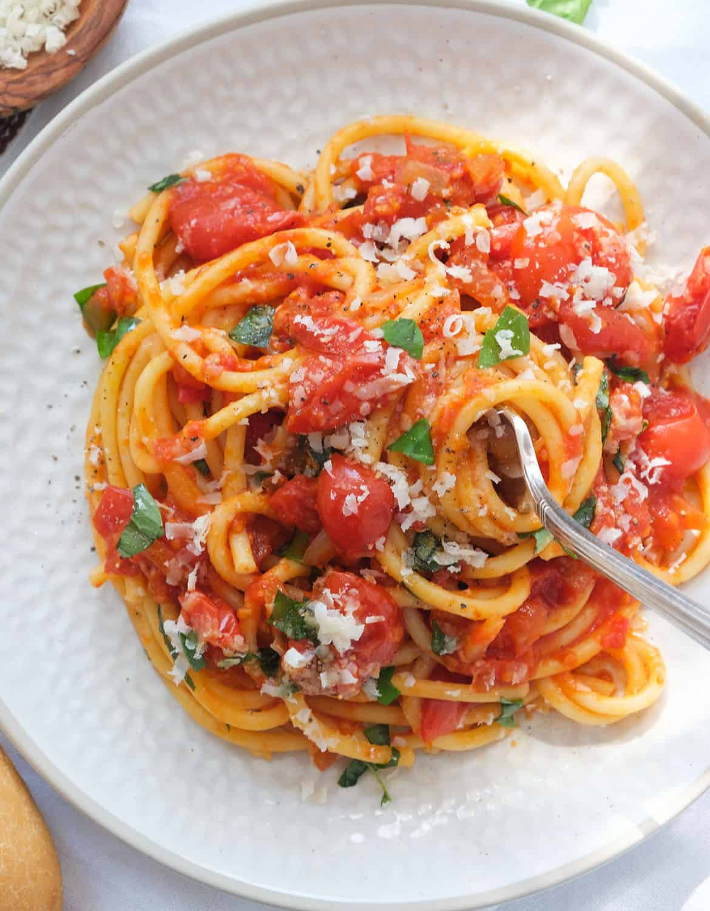

Pasta Napoletana

Description
In this easy Italian recipe the canned tomatoes are cooked in olive oil and plenty of diced onion. Sautéing onions concentrates their natural sugars and brings out their sweetness making a delicious flavor base for the tomato sauce.
Finally, pasta is tossed with the Napoletana sauce, lots of fresh basil and served with grated parmesan cheese. It’s that easy, and it tastes delicious!
Ingredients
- Pasta (bucatini, spaghetti, penne…)
- Canned tomatoes
- Onion
- Garlic
- Extra virgin olive oil or plain olive oil
- Parmesan cheese
- Fresh basil
- Salt & pepper
Steps
- Finely dice the onion.
- Add the diced onion and the oil to the pan.
- Saute’ the onion in olive oil until soft and translucent.
- Stir in the minced garlic until fragrant.
- Add canned tomatoes, salt and pepper.
- Cook the tomato sauce for 15 minutes.
- In the meantime cook and drain the pasta.
- Add pasta to the skillet along with fresh basil.
- Toss until well combined and juicy adding a touch of cooking water.
- Serve with freshly grated parmesan cheese and torn basil leaves!